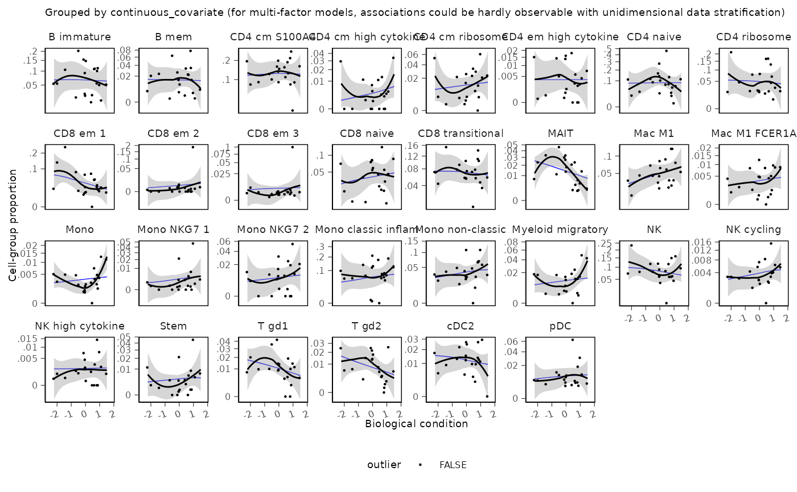

Creates a scatterplot of cell-group proportions against a continuous covariate,
optionally overlaying the posterior predictive trend from the fitted model.
Use this visualisation when the factor of interest is numeric; for discrete
factors prefer sccomp_boxplot().
Usage
sccomp_scatterplot(
.data,
factor,
significance_threshold = 0.05,
remove_unwanted_effects = FALSE
)Arguments
- .data
A tibble containing the results from
sccomp_estimateandsccomp_test, including the columns: cell_group name, sample name, read counts, factor(s), p-values, and significance indicators.- factor
A character string specifying the continuous covariate of interest included in the model.
- significance_threshold
A numeric value indicating the threshold for highlighting significant cell-groups. Defaults to 0.05.
- remove_unwanted_effects
A logical value indicating whether to remove unwanted variation from the data before plotting. Defaults to
FALSE.
Value
A ggplot object representing the scatterplot of cell proportions
against the continuous covariate, faceted by cell group.
References
S. Mangiola, A.J. Roth-Schulze, M. Trussart, E. Zozaya-Valdés, M. Ma, Z. Gao, A.F. Rubin, T.P. Speed, H. Shim, & A.T. Papenfuss, sccomp: Robust differential composition and variability analysis for single-cell data, Proc. Natl. Acad. Sci. U.S.A. 120 (33) e2203828120, https://doi.org/10.1073/pnas.2203828120 (2023).
Examples
print("cmdstanr is needed to run this example.")
#> [1] "cmdstanr is needed to run this example."
# Note: Before running the example, ensure that the 'cmdstanr' package is installed:
# install.packages("cmdstanr", repos = c("https://stan-dev.r-universe.dev/", getOption("repos")))
# \donttest{
if (instantiate::stan_cmdstan_exists()) {
data("seurat_obj")
estimate <- sccomp_estimate(
seurat_obj,
formula_composition = ~ continuous_covariate,
formula_variability = ~ 1,
sample = "sample",
cell_group = "cell_group",
cores = 1
) |>
sccomp_test()
# Plot proportions against the continuous covariate
sccomp_scatterplot(
.data = estimate,
factor = "continuous_covariate",
significance_threshold = 0.05
)
}
#> Loading required namespace: SeuratObject
#> sccomp says: count column is an integer. The sum-constrained beta binomial model will be used
#> sccomp says: estimation
#> sccomp says: the composition design matrix has columns: (Intercept), continuous_covariate
#> sccomp says: the variability design matrix has columns: (Intercept)
#> Loading model from cache...
#> Path [1] :Initial log joint density = -385052.446216
#> Path [1] : Iter log prob ||dx|| ||grad|| alpha alpha0 # evals ELBO Best ELBO Notes
#> 43 -3.823e+05 7.789e-03 9.450e-02 1.000e+00 1.000e+00 2143 -3.237e+03 -3.240e+03
#> Path [1] :Best Iter: [41] ELBO (-3237.131486) evaluations: (2143)
#> Path [2] :Initial log joint density = -383952.679272
#> Path [2] : Iter log prob ||dx|| ||grad|| alpha alpha0 # evals ELBO Best ELBO Notes
#> 35 -3.823e+05 1.386e-02 1.573e-01 1.000e+00 1.000e+00 1592 -3.237e+03 -3.239e+03
#> Path [2] :Best Iter: [33] ELBO (-3237.216355) evaluations: (1592)
#> Path [3] :Initial log joint density = -384387.847414
#> Path [3] : Iter log prob ||dx|| ||grad|| alpha alpha0 # evals ELBO Best ELBO Notes
#> 47 -3.823e+05 9.691e-03 1.318e-01 1.000e+00 1.000e+00 2394 -3.238e+03 -3.238e+03
#> Path [3] :Best Iter: [44] ELBO (-3238.179955) evaluations: (2394)
#> Path [4] :Initial log joint density = -385370.214871
#> Path [4] : Iter log prob ||dx|| ||grad|| alpha alpha0 # evals ELBO Best ELBO Notes
#> 45 -3.823e+05 3.327e-02 2.072e-01 1.000e+00 1.000e+00 2325 -3.238e+03 -3.239e+03
#> Path [4] :Best Iter: [42] ELBO (-3237.510245) evaluations: (2325)
#> Path [5] :Initial log joint density = -384163.782501
#> Path [5] : Iter log prob ||dx|| ||grad|| alpha alpha0 # evals ELBO Best ELBO Notes
#> 49 -3.823e+05 6.639e-03 1.238e-01 5.594e-01 5.594e-01 2535 -3.235e+03 -3.237e+03
#> Path [5] :Best Iter: [48] ELBO (-3235.336598) evaluations: (2535)
#> Path [6] :Initial log joint density = -384280.509588
#> Path [6] : Iter log prob ||dx|| ||grad|| alpha alpha0 # evals ELBO Best ELBO Notes
#> 39 -3.823e+05 9.741e-03 1.410e-01 9.174e-01 9.174e-01 1886 -3.238e+03 -3.240e+03
#> Path [6] :Best Iter: [38] ELBO (-3237.710282) evaluations: (1886)
#> Path [7] :Initial log joint density = -384242.709842
#> Path [7] : Iter log prob ||dx|| ||grad|| alpha alpha0 # evals ELBO Best ELBO Notes
#> 36 -3.823e+05 1.282e-02 1.157e-01 1.000e+00 1.000e+00 1694 -3.239e+03 -3.241e+03
#> Path [7] :Best Iter: [33] ELBO (-3239.492078) evaluations: (1694)
#> Path [8] :Initial log joint density = -384216.450172
#> Path [8] : Iter log prob ||dx|| ||grad|| alpha alpha0 # evals ELBO Best ELBO Notes
#> 43 -3.823e+05 1.628e-02 1.411e-01 1.000e+00 1.000e+00 2113 -3.237e+03 -3.242e+03
#> Path [8] :Best Iter: [41] ELBO (-3237.169850) evaluations: (2113)
#> Path [9] :Initial log joint density = -384594.893414
#> Path [9] : Iter log prob ||dx|| ||grad|| alpha alpha0 # evals ELBO Best ELBO Notes
#> 43 -3.823e+05 1.496e-02 1.236e-01 1.000e+00 1.000e+00 2078 -3.237e+03 -3.244e+03
#> Path [9] :Best Iter: [41] ELBO (-3237.460085) evaluations: (2078)
#> Path [10] :Initial log joint density = -384426.090089
#> Path [10] : Iter log prob ||dx|| ||grad|| alpha alpha0 # evals ELBO Best ELBO Notes
#> 45 -3.823e+05 1.586e-02 1.786e-01 1.000e+00 1.000e+00 2271 -3.239e+03 -3.238e+03
#> Path [10] :Best Iter: [45] ELBO (-3237.633436) evaluations: (2271)
#> Path [11] :Initial log joint density = -384811.693619
#> Path [11] : Iter log prob ||dx|| ||grad|| alpha alpha0 # evals ELBO Best ELBO Notes
#> 39 -3.823e+05 1.568e-02 2.359e-01 1.000e+00 1.000e+00 1898 -3.238e+03 -3.242e+03
#> Path [11] :Best Iter: [38] ELBO (-3238.270724) evaluations: (1898)
#> Path [12] :Initial log joint density = -384299.955833
#> Path [12] : Iter log prob ||dx|| ||grad|| alpha alpha0 # evals ELBO Best ELBO Notes
#> 45 -3.823e+05 6.253e-03 7.182e-02 4.080e-01 1.000e+00 2207 -3.237e+03 -3.239e+03
#> Path [12] :Best Iter: [42] ELBO (-3237.465422) evaluations: (2207)
#> Path [13] :Initial log joint density = -384527.779191
#> Path [13] : Iter log prob ||dx|| ||grad|| alpha alpha0 # evals ELBO Best ELBO Notes
#> 44 -3.823e+05 5.766e-03 8.711e-02 9.533e-01 9.533e-01 2216 -3.238e+03 -3.241e+03
#> Path [13] :Best Iter: [39] ELBO (-3237.725625) evaluations: (2216)
#> Path [14] :Initial log joint density = -384883.289908
#> Path [14] : Iter log prob ||dx|| ||grad|| alpha alpha0 # evals ELBO Best ELBO Notes
#> 46 -3.823e+05 1.736e-02 9.070e-02 1.000e+00 1.000e+00 2347 -3.237e+03 -3.237e+03
#> Path [14] :Best Iter: [44] ELBO (-3236.706228) evaluations: (2347)
#> Path [15] :Initial log joint density = -384116.841548
#> Path [15] : Iter log prob ||dx|| ||grad|| alpha alpha0 # evals ELBO Best ELBO Notes
#> 40 -3.823e+05 8.791e-03 1.150e-01 1.000e+00 1.000e+00 1875 -3.237e+03 -3.237e+03
#> Path [15] :Best Iter: [37] ELBO (-3236.616288) evaluations: (1875)
#> Path [16] :Initial log joint density = -384057.496820
#> Path [16] : Iter log prob ||dx|| ||grad|| alpha alpha0 # evals ELBO Best ELBO Notes
#> 29 -3.823e+05 1.121e-02 1.652e-01 9.601e-01 9.601e-01 1245 -3.240e+03 -3.243e+03
#> Path [16] :Best Iter: [27] ELBO (-3240.493491) evaluations: (1245)
#> Path [17] :Initial log joint density = -384056.335729
#> Path [17] : Iter log prob ||dx|| ||grad|| alpha alpha0 # evals ELBO Best ELBO Notes
#> 39 -3.823e+05 1.624e-02 9.774e-02 1.000e+00 1.000e+00 1837 -3.238e+03 -3.245e+03
#> Path [17] :Best Iter: [38] ELBO (-3237.500908) evaluations: (1837)
#> Path [18] :Initial log joint density = -384044.460483
#> Path [18] : Iter log prob ||dx|| ||grad|| alpha alpha0 # evals ELBO Best ELBO Notes
#> 44 -3.823e+05 9.670e-03 7.419e-02 1.000e+00 1.000e+00 2162 -3.237e+03 -3.238e+03
#> Path [18] :Best Iter: [39] ELBO (-3236.945392) evaluations: (2162)
#> Path [19] :Initial log joint density = -385325.486466
#> Path [19] : Iter log prob ||dx|| ||grad|| alpha alpha0 # evals ELBO Best ELBO Notes
#> 46 -3.823e+05 8.262e-03 1.052e-01 2.608e-01 1.000e+00 2363 -3.237e+03 -3.236e+03
#> Path [19] :Best Iter: [46] ELBO (-3236.327719) evaluations: (2363)
#> Path [20] :Initial log joint density = -384167.034465
#> Path [20] : Iter log prob ||dx|| ||grad|| alpha alpha0 # evals ELBO Best ELBO Notes
#> 41 -3.823e+05 1.368e-02 1.380e-01 1.000e+00 1.000e+00 2013 -3.237e+03 -3.240e+03
#> Path [20] :Best Iter: [40] ELBO (-3237.142606) evaluations: (2013)
#> Path [21] :Initial log joint density = -384279.956702
#> Path [21] : Iter log prob ||dx|| ||grad|| alpha alpha0 # evals ELBO Best ELBO Notes
#> 37 -3.823e+05 6.287e-03 1.933e-01 5.455e-01 5.455e-01 1748 -3.237e+03 -3.239e+03
#> Path [21] :Best Iter: [30] ELBO (-3237.229498) evaluations: (1748)
#> Path [22] :Initial log joint density = -387830.525186
#> Path [22] : Iter log prob ||dx|| ||grad|| alpha alpha0 # evals ELBO Best ELBO Notes
#> 41 -3.823e+05 1.635e-02 2.110e-01 1.000e+00 1.000e+00 2050 -3.239e+03 -3.241e+03
#> Path [22] :Best Iter: [34] ELBO (-3239.085802) evaluations: (2050)
#> Path [23] :Initial log joint density = -384013.320462
#> Path [23] : Iter log prob ||dx|| ||grad|| alpha alpha0 # evals ELBO Best ELBO Notes
#> 40 -3.823e+05 1.066e-02 1.209e-01 1.000e+00 1.000e+00 1901 -3.237e+03 -3.239e+03
#> Path [23] :Best Iter: [38] ELBO (-3237.333772) evaluations: (1901)
#> Path [24] :Initial log joint density = -384172.103460
#> Path [24] : Iter log prob ||dx|| ||grad|| alpha alpha0 # evals ELBO Best ELBO Notes
#> 28 -3.823e+05 1.641e-02 9.736e-02 1.000e+00 1.000e+00 1166 -3.240e+03 -3.240e+03
#> Path [24] :Best Iter: [27] ELBO (-3239.792023) evaluations: (1166)
#> Path [25] :Initial log joint density = -384428.753973
#> Path [25] : Iter log prob ||dx|| ||grad|| alpha alpha0 # evals ELBO Best ELBO Notes
#> 50 -3.823e+05 1.365e-02 9.237e-02 1.000e+00 1.000e+00 2604 -3.235e+03 -3.236e+03
#> Path [25] :Best Iter: [46] ELBO (-3235.137164) evaluations: (2604)
#> Path [26] :Initial log joint density = -384101.417367
#> Path [26] : Iter log prob ||dx|| ||grad|| alpha alpha0 # evals ELBO Best ELBO Notes
#> 40 -3.823e+05 8.579e-03 1.661e-01 5.220e-01 5.220e-01 1943 -3.237e+03 -3.238e+03
#> Path [26] :Best Iter: [39] ELBO (-3237.484617) evaluations: (1943)
#> Path [27] :Initial log joint density = -383997.753199
#> Path [27] : Iter log prob ||dx|| ||grad|| alpha alpha0 # evals ELBO Best ELBO Notes
#> 39 -3.823e+05 9.827e-03 9.309e-02 3.399e-01 1.000e+00 1889 -3.238e+03 -3.239e+03
#> Path [27] :Best Iter: [30] ELBO (-3237.594134) evaluations: (1889)
#> Path [28] :Initial log joint density = -384329.580805
#> Path [28] : Iter log prob ||dx|| ||grad|| alpha alpha0 # evals ELBO Best ELBO Notes
#> 35 -3.823e+05 8.493e-03 1.177e-01 1.000e+00 1.000e+00 1604 -3.240e+03 -3.242e+03
#> Path [28] :Best Iter: [33] ELBO (-3239.819692) evaluations: (1604)
#> Path [29] :Initial log joint density = -383897.950741
#> Path [29] : Iter log prob ||dx|| ||grad|| alpha alpha0 # evals ELBO Best ELBO Notes
#> 36 -3.823e+05 1.712e-02 1.163e-01 1.000e+00 1.000e+00 1674 -3.236e+03 -3.240e+03
#> Path [29] :Best Iter: [35] ELBO (-3235.765917) evaluations: (1674)
#> Path [30] :Initial log joint density = -383951.813839
#> Path [30] : Iter log prob ||dx|| ||grad|| alpha alpha0 # evals ELBO Best ELBO Notes
#> 37 -3.823e+05 1.535e-02 9.933e-02 1.000e+00 1.000e+00 1703 -3.238e+03 -3.239e+03
#> Path [30] :Best Iter: [36] ELBO (-3237.651875) evaluations: (1703)
#> Path [31] :Initial log joint density = -384250.458448
#> Path [31] : Iter log prob ||dx|| ||grad|| alpha alpha0 # evals ELBO Best ELBO Notes
#> 28 -3.823e+05 4.382e-03 1.660e-01 7.371e-01 7.371e-01 1214 -3.240e+03 -3.245e+03
#> Path [31] :Best Iter: [25] ELBO (-3239.888377) evaluations: (1214)
#> Path [32] :Initial log joint density = -384166.957079
#> Path [32] : Iter log prob ||dx|| ||grad|| alpha alpha0 # evals ELBO Best ELBO Notes
#> 35 -3.823e+05 5.031e-03 1.470e-01 6.339e-01 6.339e-01 1567 -3.240e+03 -3.248e+03
#> Path [32] :Best Iter: [34] ELBO (-3239.808203) evaluations: (1567)
#> Path [33] :Initial log joint density = -384427.294410
#> Path [33] : Iter log prob ||dx|| ||grad|| alpha alpha0 # evals ELBO Best ELBO Notes
#> 40 -3.823e+05 1.348e-02 2.222e-01 1.000e+00 1.000e+00 1916 -3.239e+03 -3.242e+03
#> Path [33] :Best Iter: [28] ELBO (-3238.508989) evaluations: (1916)
#> Path [34] :Initial log joint density = -384183.074917
#> Path [34] : Iter log prob ||dx|| ||grad|| alpha alpha0 # evals ELBO Best ELBO Notes
#> 46 -3.823e+05 1.452e-02 1.085e-01 1.000e+00 1.000e+00 2330 -3.238e+03 -3.235e+03
#> Path [34] :Best Iter: [46] ELBO (-3235.049267) evaluations: (2330)
#> Path [35] :Initial log joint density = -384235.825729
#> Path [35] : Iter log prob ||dx|| ||grad|| alpha alpha0 # evals ELBO Best ELBO Notes
#> 28 -3.823e+05 8.010e-03 1.549e-01 1.000e+00 1.000e+00 1180 -3.240e+03 -3.241e+03
#> Path [35] :Best Iter: [24] ELBO (-3240.321913) evaluations: (1180)
#> Path [36] :Initial log joint density = -386984.575111
#> Path [36] : Iter log prob ||dx|| ||grad|| alpha alpha0 # evals ELBO Best ELBO Notes
#> 45 -3.823e+05 1.738e-02 3.768e-02 1.000e+00 1.000e+00 2253 -3.239e+03 -3.240e+03
#> Path [36] :Best Iter: [43] ELBO (-3238.642890) evaluations: (2253)
#> Path [37] :Initial log joint density = -384065.312826
#> Path [37] : Iter log prob ||dx|| ||grad|| alpha alpha0 # evals ELBO Best ELBO Notes
#> 35 -3.823e+05 8.062e-03 1.618e-01 2.691e-01 1.000e+00 1611 -3.236e+03 -3.240e+03
#> Path [37] :Best Iter: [32] ELBO (-3236.356786) evaluations: (1611)
#> Path [38] :Initial log joint density = -384434.618434
#> Path [38] : Iter log prob ||dx|| ||grad|| alpha alpha0 # evals ELBO Best ELBO Notes
#> 47 -3.823e+05 1.153e-02 1.380e-01 1.000e+00 1.000e+00 2383 -3.238e+03 -3.236e+03
#> Path [38] :Best Iter: [47] ELBO (-3236.462107) evaluations: (2383)
#> Path [39] :Initial log joint density = -384514.186261
#> Path [39] : Iter log prob ||dx|| ||grad|| alpha alpha0 # evals ELBO Best ELBO Notes
#> 34 -3.823e+05 5.846e-03 1.294e-01 8.834e-01 8.834e-01 1560 -3.240e+03 -3.240e+03
#> Path [39] :Best Iter: [22] ELBO (-3239.507028) evaluations: (1560)
#> Path [40] :Initial log joint density = -384176.781527
#> Path [40] : Iter log prob ||dx|| ||grad|| alpha alpha0 # evals ELBO Best ELBO Notes
#> 45 -3.823e+05 7.305e-03 6.420e-02 3.373e-01 1.000e+00 2207 -3.238e+03 -3.240e+03
#> Path [40] :Best Iter: [35] ELBO (-3237.940705) evaluations: (2207)
#> Path [41] :Initial log joint density = -384076.330782
#> Path [41] : Iter log prob ||dx|| ||grad|| alpha alpha0 # evals ELBO Best ELBO Notes
#> 39 -3.823e+05 7.533e-03 1.175e-01 6.906e-01 6.906e-01 1856 -3.236e+03 -3.240e+03
#> Path [41] :Best Iter: [35] ELBO (-3236.272634) evaluations: (1856)
#> Path [42] :Initial log joint density = -384794.628301
#> Path [42] : Iter log prob ||dx|| ||grad|| alpha alpha0 # evals ELBO Best ELBO Notes
#> 40 -3.823e+05 3.289e-03 1.323e-01 6.488e-01 6.488e-01 1915 -3.240e+03 -3.240e+03
#> Path [42] :Best Iter: [39] ELBO (-3239.606484) evaluations: (1915)
#> Path [43] :Initial log joint density = -384106.651058
#> Path [43] : Iter log prob ||dx|| ||grad|| alpha alpha0 # evals ELBO Best ELBO Notes
#> 35 -3.823e+05 1.763e-02 1.599e-01 1.000e+00 1.000e+00 1576 -3.238e+03 -3.238e+03
#> Path [43] :Best Iter: [33] ELBO (-3238.216907) evaluations: (1576)
#> Path [44] :Initial log joint density = -383974.694000
#> Path [44] : Iter log prob ||dx|| ||grad|| alpha alpha0 # evals ELBO Best ELBO Notes
#> 37 -3.823e+05 2.112e-02 1.606e-01 1.000e+00 1.000e+00 1717 -3.238e+03 -3.240e+03
#> Path [44] :Best Iter: [34] ELBO (-3238.376528) evaluations: (1717)
#> Path [45] :Initial log joint density = -384174.734510
#> Path [45] : Iter log prob ||dx|| ||grad|| alpha alpha0 # evals ELBO Best ELBO Notes
#> 37 -3.823e+05 7.336e-03 1.230e-01 9.995e-01 9.995e-01 1730 -3.238e+03 -3.238e+03
#> Path [45] :Best Iter: [31] ELBO (-3237.648311) evaluations: (1730)
#> Path [46] :Initial log joint density = -384305.473259
#> Path [46] : Iter log prob ||dx|| ||grad|| alpha alpha0 # evals ELBO Best ELBO Notes
#> 38 -3.823e+05 2.337e-02 1.557e-01 1.000e+00 1.000e+00 1730 -3.237e+03 -3.238e+03
#> Path [46] :Best Iter: [32] ELBO (-3236.988956) evaluations: (1730)
#> Path [47] :Initial log joint density = -384069.243242
#> Path [47] : Iter log prob ||dx|| ||grad|| alpha alpha0 # evals ELBO Best ELBO Notes
#> 27 -3.823e+05 9.528e-03 1.595e-01 7.271e-01 7.271e-01 1108 -3.239e+03 -3.245e+03
#> Path [47] :Best Iter: [20] ELBO (-3239.178848) evaluations: (1108)
#> Path [48] :Initial log joint density = -386653.568916
#> Path [48] : Iter log prob ||dx|| ||grad|| alpha alpha0 # evals ELBO Best ELBO Notes
#> 38 -3.823e+05 1.360e-02 1.770e-01 9.703e-01 9.703e-01 1767 -3.241e+03 -3.240e+03
#> Path [48] :Best Iter: [38] ELBO (-3239.667301) evaluations: (1767)
#> Path [49] :Initial log joint density = -384003.849525
#> Path [49] : Iter log prob ||dx|| ||grad|| alpha alpha0 # evals ELBO Best ELBO Notes
#> 38 -3.823e+05 8.469e-03 9.172e-02 1.000e+00 1.000e+00 1803 -3.238e+03 -3.240e+03
#> Path [49] :Best Iter: [27] ELBO (-3237.518220) evaluations: (1803)
#> Path [50] :Initial log joint density = -383911.626599
#> Path [50] : Iter log prob ||dx|| ||grad|| alpha alpha0 # evals ELBO Best ELBO Notes
#> 43 -3.823e+05 2.988e-02 1.324e-01 1.000e+00 1.000e+00 2097 -3.238e+03 -3.239e+03
#> Path [50] :Best Iter: [33] ELBO (-3237.939910) evaluations: (2097)
#> Finished in 8.3 seconds.
#> sccomp says: to do hypothesis testing run `sccomp_test()`,
#> the `test_composition_above_logit_fold_change` = 0.1 equates to a change of ~10%, and
#> 0.7 equates to ~100% increase, if the baseline is ~0.1 proportion.
#> Use `sccomp_proportional_fold_change` to convert c_effect (linear) to proportion difference (non-linear).
#> sccomp says: auto-cleanup removed 1 draw files from 'sccomp_draws_files'
#> Joining with `by = join_by(cell_group, M, parameter)`
#> sccomp says: When visualising proportions, especially for complex models, consider setting `remove_unwanted_effects=TRUE`. This will adjust the proportions, preserving only the observed effect.
#> Loading model from cache...
#> Running standalone generated quantities after 1 MCMC chain, with 1 thread(s) per chain...
#>
#> Chain 1 Elapsed Time: 0.964 seconds (Generated Quantities)
#> Chain 1 finished in 0.0 seconds.
#> Joining with `by = join_by(cell_group, sample)`
#> Joining with `by = join_by(cell_group, sample, continuous_covariate)`
#> `geom_smooth()` using method = 'gam' and formula = 'y ~ s(x, bs = "cs")'
#> `geom_smooth()` using method = 'loess' and formula = 'y ~ x'
#> Warning: `position_jitterdodge()` requires non-overlapping x intervals.
#> Warning: `position_jitterdodge()` requires non-overlapping x intervals.
#> Warning: `position_jitterdodge()` requires non-overlapping x intervals.
#> Warning: `position_jitterdodge()` requires non-overlapping x intervals.
#> Warning: `position_jitterdodge()` requires non-overlapping x intervals.
#> Warning: `position_jitterdodge()` requires non-overlapping x intervals.
#> Warning: `position_jitterdodge()` requires non-overlapping x intervals.
#> Warning: `position_jitterdodge()` requires non-overlapping x intervals.
#> Warning: `position_jitterdodge()` requires non-overlapping x intervals.
#> Warning: `position_jitterdodge()` requires non-overlapping x intervals.
#> Warning: `position_jitterdodge()` requires non-overlapping x intervals.
#> Warning: `position_jitterdodge()` requires non-overlapping x intervals.
#> Warning: `position_jitterdodge()` requires non-overlapping x intervals.
#> Warning: `position_jitterdodge()` requires non-overlapping x intervals.
#> Warning: `position_jitterdodge()` requires non-overlapping x intervals.
#> Warning: `position_jitterdodge()` requires non-overlapping x intervals.
#> Warning: `position_jitterdodge()` requires non-overlapping x intervals.
#> Warning: `position_jitterdodge()` requires non-overlapping x intervals.
#> Warning: `position_jitterdodge()` requires non-overlapping x intervals.
#> Warning: `position_jitterdodge()` requires non-overlapping x intervals.
#> Warning: `position_jitterdodge()` requires non-overlapping x intervals.
#> Warning: `position_jitterdodge()` requires non-overlapping x intervals.
#> Warning: `position_jitterdodge()` requires non-overlapping x intervals.
#> Warning: `position_jitterdodge()` requires non-overlapping x intervals.
#> Warning: `position_jitterdodge()` requires non-overlapping x intervals.
#> Warning: `position_jitterdodge()` requires non-overlapping x intervals.
#> Warning: `position_jitterdodge()` requires non-overlapping x intervals.
#> Warning: `position_jitterdodge()` requires non-overlapping x intervals.
#> Warning: `position_jitterdodge()` requires non-overlapping x intervals.
#> Warning: `position_jitterdodge()` requires non-overlapping x intervals.

# }